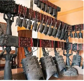
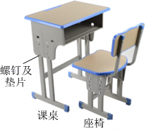
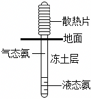
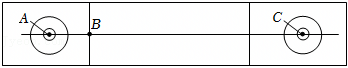
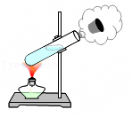

2025年北京市中考物理试卷 · 选择题 第6、7、8、9、10题 · 对应解析
6．（2分）如图所示的是编钟演奏的情境，下列说法正确的是（ ）

A．敲击编钟时发出的声音是空气振动产生的
B．听众听到的编钟声音，是通过空气传播的
C．编钟发出的声音可以在真空中传播
D．用大小不同的力敲击同一只编钟的同一位置，发出声音的音调不同
【答案】B
【分析】（1）声音是由物体的振动产生的；
（2）我们平时听到的声音是通过空气传播的；
（3）声音的传播需要介质，真空不能传声；
（4）响度的大小与物体的振幅有关，振幅越大，响度越大。
【解答】解：A．声音是由物体振动产生的，敲击编钟时发出的声音是由编钟振动产生的，故A错误；
B．听众听到的编钟声音，是通过空气传播进入人耳的，故B正确；
C．声音的传播需要介质，编钟发出的声音不能在真空中传播，故C错误；
D．用大小不同的力敲击同一只编钟的同一位置，发声体的振幅不一样，响度不同，故D错误。
故选：B。
7．（2分）如图所示，课桌和座椅放在水平地面上，下列说法正确的是（ ）

A．课桌的高度约为1.5m
B．螺钉下面放置垫片是为了增大压强
C．课桌受到的支持力与它受到的重力是一对相互作用力
D．座椅受到的重力与地面对它的支持力是一对平衡力
【答案】D
【分析】（1）可以根据中学生的身高估测课桌的高度；
（2）减小压强的方法：在压力一定时，增大受力面积来减小压强；在受力面积一定时，减小压力来减小压强；
（3）相互作用力的条件：大小相等、方向相反、作用在两个物体上，作用在同一条直线上；
（4）二力平衡的条件：大小相等、方向相反、在同一直线上、作用于同一物体上。
【解答】解：A、中学生课桌的高度约为中学生身高的一半，大约为75cm＝0.75m，故A错误；
B、螺钉下面放置垫片，是在压力一定的情况下，通过增大受力面积来减小压强，故B错误；
C、课桌受到的支持力与它受到的重力，受力物体相同，不是一对相互作用力，故C错误；
D、座椅受到的重力与地面对它的支持力，大小相等、方向相反、在同一直线上、作用于同一物体上，是一对平衡力，故D正确。
故选：D。
8．（2分）在青藏铁路工程中，为了保证多年冻土区路基的稳定性，铁路两侧竖立了许多热棒。如图所示，热棒是封闭的中空长棒，下端插在冻土中，上端装有散热片，里面填充低沸点的液态氨作为“制冷剂”。在寒冷的季节，空气温度低于冻土层温度，制冷剂作为热的“搬运工”，通过液态氨与气态氨的相互转化，使冻土层温度降低、厚度增加，这样即使到了暖季热棒不再工作，冻土也不会完全融化，冻土层因温度变化对路基产生的影响变小。关于热棒在工作过程中，下列说法正确的是（ ）

A．液态氨吸收冻土的热量变为气态氨是升华现象
B．气态氨上升到热棒上端放出热量液化为液态氨
C．热棒的作用是把热量从空气中传到冻土中
D．冻土层从热棒吸收热量，厚度增加
【答案】B
【分析】物质由液态变为气态的过程叫汽化，物质由气态变为液态的过程叫液化。汽化过程吸收热量，液化过程放出热量。
当路基温度升高时，液氨吸收热量发生汽化现象，气态氨上升到热棒的上端，通过散热片将热量传导给空气，此时气态氨放出热量发生液化现象，变成了液态氨，又沉入棒底，这样，热棒就相当于一个“制冷机”。
【解答】解：A、液态氨吸收冻土的热量变为气态氨是汽化现象，故A错误；
B、气态氨上升到热棒上端液化为液态氨，此过程中放出热量，故B正确；
C、热棒的作用是把热量从冻土中传到空气中，故C错误；
D、冻土层被热棒吸收热量，厚度增加，故D错误。
故选：B。
9．（2分）如图所示是冰壶场地的示意图，水平冰面粗糙程度相同。某同学用水平推力使冰壶从A点向前运动，到B点时松手，冰壶滑行到C点静止。下列说法正确的是（ ）

A．冰壶从B到C的过程，该同学对冰壶做了功
B．冰壶能够从B运动到C，是由于它受到了惯性作用
C．冰壶从B到C的过程先加速后减速，机械能没有转化为内能
D．冰壶在AB段所受的摩擦力等于在BC段所受的摩擦力
【答案】D
【分析】（1）是否做功需要满足，有力的作用，并且在力的方向上有移动距离；
（2）惯性是物体的属性；
（3）机械能包括动能和势能；动能的大小与质量和速度有关，重力势能大小与质量和高度有关；
（4）影响滑动摩擦力的因素有压力大小和接触面的粗糙程度。
【解答】解：
A.冰壶从B到C的过程中，该同学没有对冰壶施加力，根据做功的两个必要因素，所以该同学对冰壶没有做功，故A错误；
B.冰壶能够从B运动到C，是由于冰壶具有惯性，惯性是物体的一种属性，不是力，不能说“受到惯性作用”，故B错误；
C.冰壶从B到C的过程中，由于受到摩擦力的作用，速度逐渐减小，动能转化为内能，机械能减小，故C错误；
D.冰壶在AB段和BC段，压力大小（等于冰壶重力 ）和接触面的粗糙程度相同，根据摩擦力大小的影响因素，可知冰壶在AB段所受的摩擦力等于在BC段所受的摩擦力，故D正确。
故选：D。
10．（2分）在试管内装些水，用橡胶塞塞住管口，将水加热一段时间，橡胶塞被推出，管口出现大量“白气”，如图所示。下列说法正确的是（ ）

A．水变热的过程，其内能是通过做功的方式改变的
B．橡胶塞被推出的过程中，水的内能全部转化为塞子的机械能
C．水蒸气推出橡胶塞的过程中，水蒸气的内能减小
D．管口出现的“白气”是试管内的水直接汽化形成的
【答案】C
【分析】（1）水变热是通过热传递的方式改变内能的；
（2）（3）水汽化对外做功，内能转化为机械能，内能剑侠，不是全部转化，会有损耗；
（4）白气是小水珠。
【解答】解：
A.水变热是通过热传递的方式（火焰的热量传递给试管和水 ）改变内能，不是做功，故A错误；
B.橡胶塞被推出过程中，水的内能一部分转化为塞子机械能，还有部分内能散失，不是全部转化，故B错误；
C.水蒸气推出橡胶塞时，对塞子做功，自身内能减小，故C正确；
D.“白气”是水蒸气遇冷液化形成的小水滴，不是水的汽化，故D错误。
故选：C。